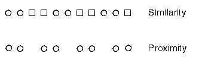
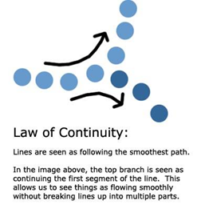
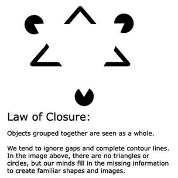

Where you choose to place the visual elements and content on your Learning Systems site has a big impact on the users initial “over-all feel” of the entire experience. If things are grouped incorrectly, they may perceive that things are “off”, and thus be turned off to the experience entirely before even exploring the rest of the site. Grouping and effectively implementing a conceptual meaning structure to your Learning System is essential to its success, especially because Learning Systems in particular tend to have a lot of textual content. The methodology behind grouping lies in the Gestalt Principles of proximity, similarity, continuity, and closure. The design implications of these four principles are explained below: The Gestalt Laws of proximity and similarity demands that designers connect similar things by pattern/structure (e.g., same color/font headers).
The Gestalt Law of continuity states that designers should organize their sites pages with continuous, not discontinuous, flow lines.
The Gestalt Law of closure requires designers to use background colors and patterns that continue to give stability and context.
